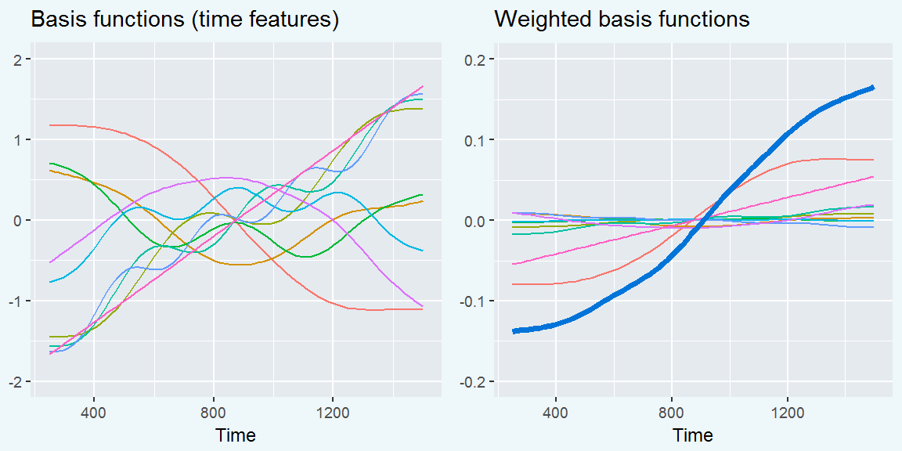

Chapter 9 Quick testing sandbox
This is a chapter for quickly previewing and testing how content appears
We fit a generalized additive model with fast restricted maximum likelihood estimation [Wood (2017); Sóskuthy (2017) for a tutorial for linguists; see Box 1]. We included main effects of study year. These parametric terms work like conventional regression effects and determined the growth curve’s average values. We used age-4 as the reference year, so the model’s intercept represented the average looking probability at age 4. The model’s year effects therefore represented differences between age 4 vs. age 3 and age 4 vs. age 5.
We included a smooth term for time. We included a smooth term for trial time to represent a general effect of time following noun onset across all studies, and we also included smooth terms for time for each study. These study-specific smooths estimate how the shape of the data differs in each individual study. As an equation, our model estimated: [Barr (2008);] (vers. 2.3; van Rij et al., 2017)
Box 1: The Intuition Behind Generalized Additive Models.
In these analyses, the outcome of interest is a value that changes over time in a nonlinear way. We model these time series by building a set of features to represent time values. In the growth curve analyses of familiar word recognition, we used a set of polynomial features which expressed time as the weighted sum of a linear trend, a quadratic trend and cubic trend. That is:
\[ \text{log-odds}(\mathit{looking}) = \alpha + \beta_1 * \textit{Time}^1 + \beta_2 * \textit{Time}^2 + \beta_3 * \textit{Time}^3 \]
But another way to think about the polynomial terms is as basis functions: A set of features that combine to approximate some nonlinear function of time. Under this framework, the model can be expressed as:
\[ \text{log-odds}(\mathit{looking}) = \alpha + f(\textit{Time}) \]
This is the idea behind generalized additive models and their smooth terms. These smooths fit nonlinear functions of data by weighting and adding simple functions together. The figures below show 9 basis functions from a “thin-plate spline” and how they can be weighted and summed to fit a growth curve.

Each of these basis functions is weighted by a model coefficient, but the individual basis functions are not a priori meaningful. Rather, it is the whole set of functions that approximate the curvature of the data—i.e., f(Time))—so we statistically evaluate the whole batch of coefficients simultaneously. This joint testing is similar to how one might test a batch of effects in an ANOVA. If the batch of effects jointly improve model fit, we infer that there is a significant smooth or shape effect. (Not quite sure this is 100% accurate yet.)
Smooth terms come with an estimated degrees of freedom (EDF). These values provide a sense of how many degrees of freedom the smooth consumed. An EDF of 1 is a perfectly straight line, indicating no smoothing. Higher EDF values indicate that the smooth term captured more curvature from the data.
References
Wood, S. N. (2017). Generalized additive models: An introduction with R (2nd ed.). CRC Press.
Sóskuthy, M. (2017). Generalised additive mixed models for dynamic analysis in linguistics: a practical introduction. Retrieved from http://arxiv.org/abs/1703.05339
Barr, D. J. (2008). Analyzing ‘visual world’ eyetracking data using multilevel logistic regression. Journal of Memory and Language, 59(4), 457–474. doi:10.1016/j.jml.2007.09.002
van Rij, J., Wieling, M., Baayen, R. H., & van Rijn, H. (2017). itsadug: Interpreting time series and autocorrelated data using GAMMs.